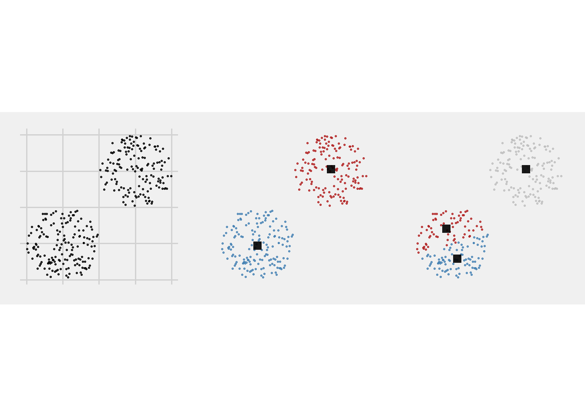
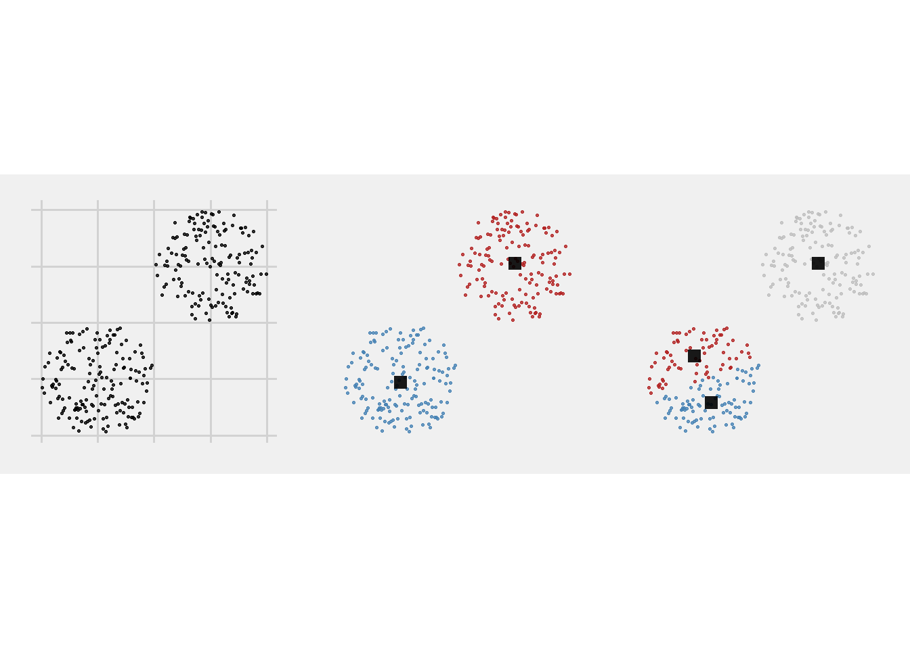
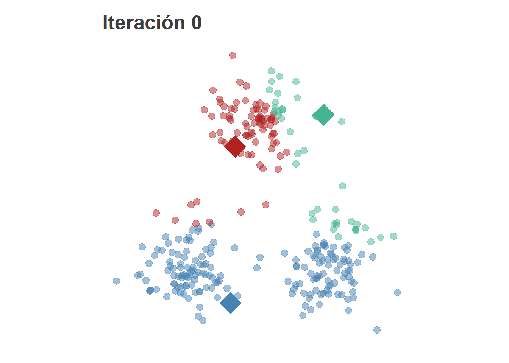
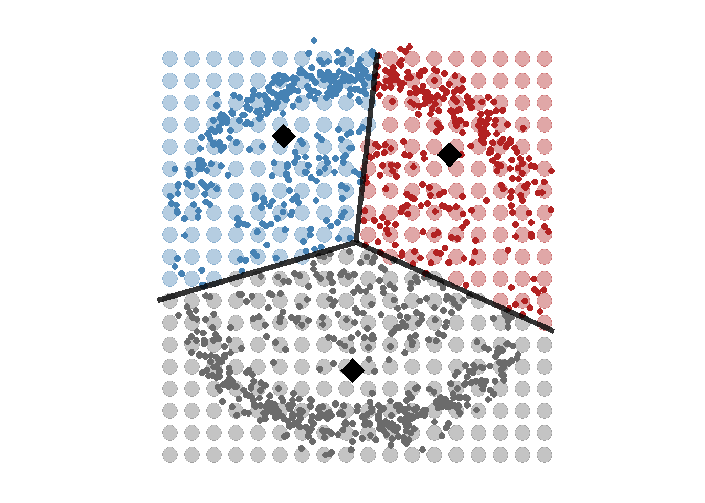
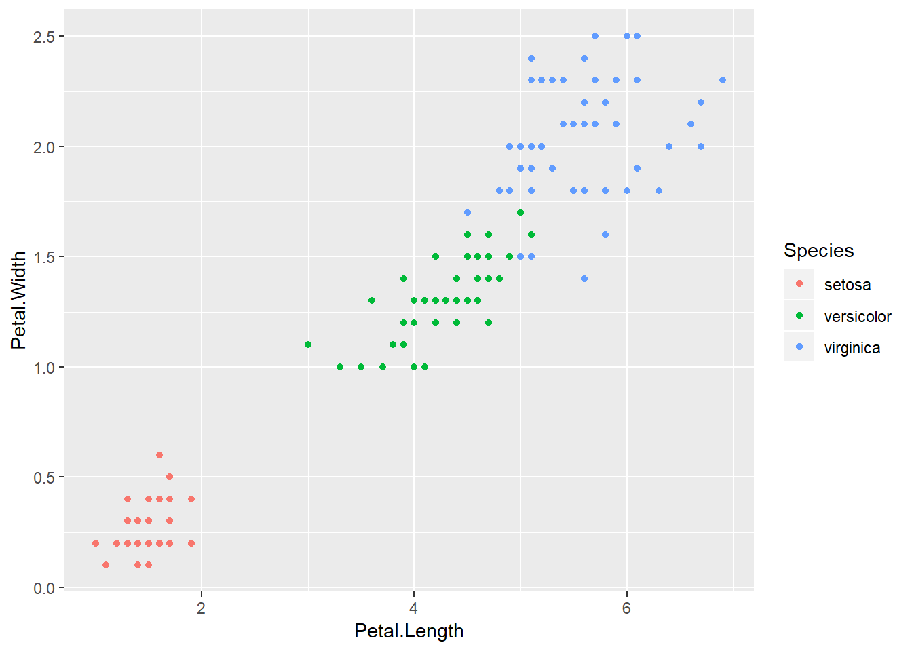
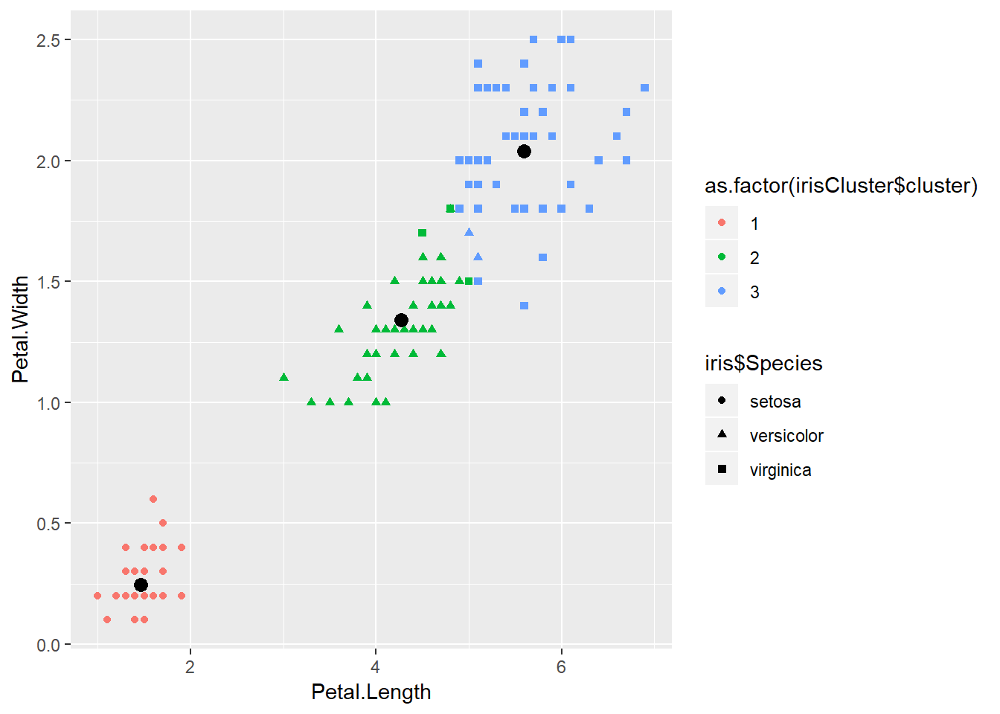
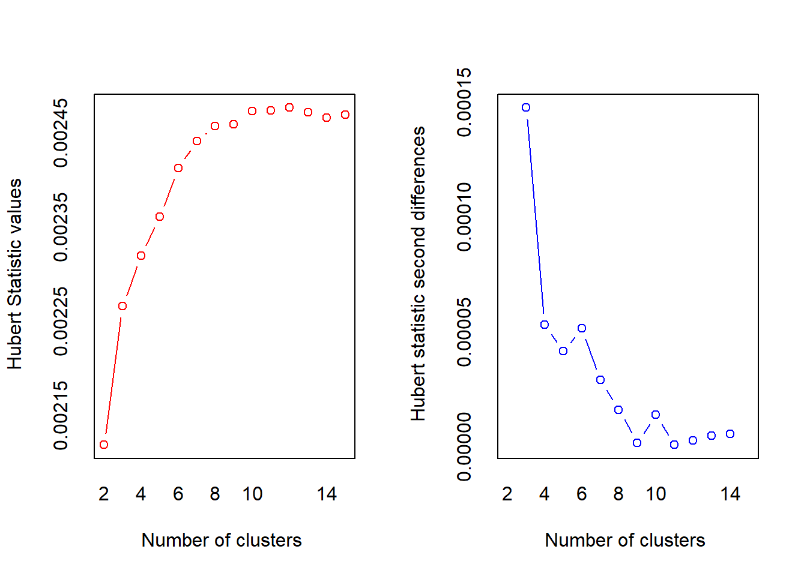
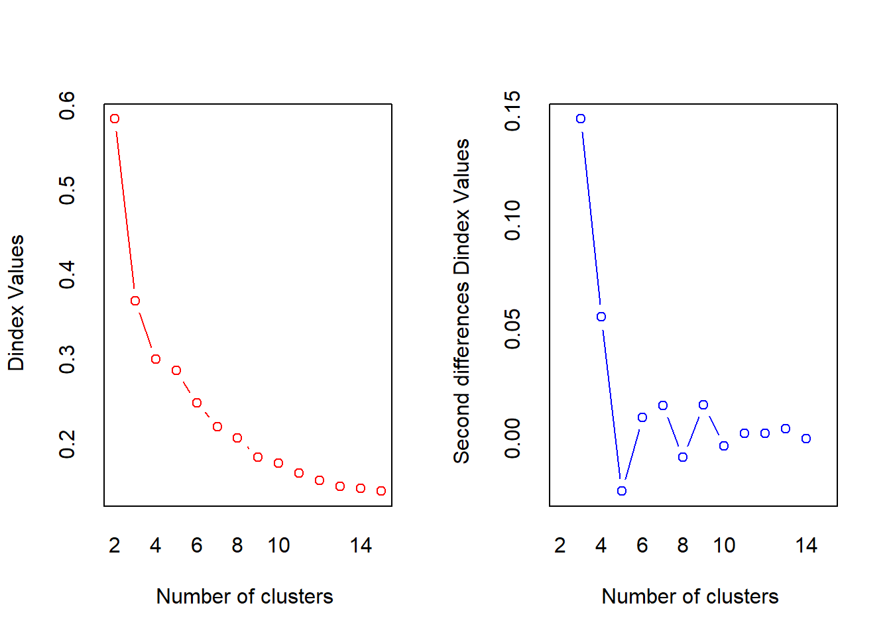
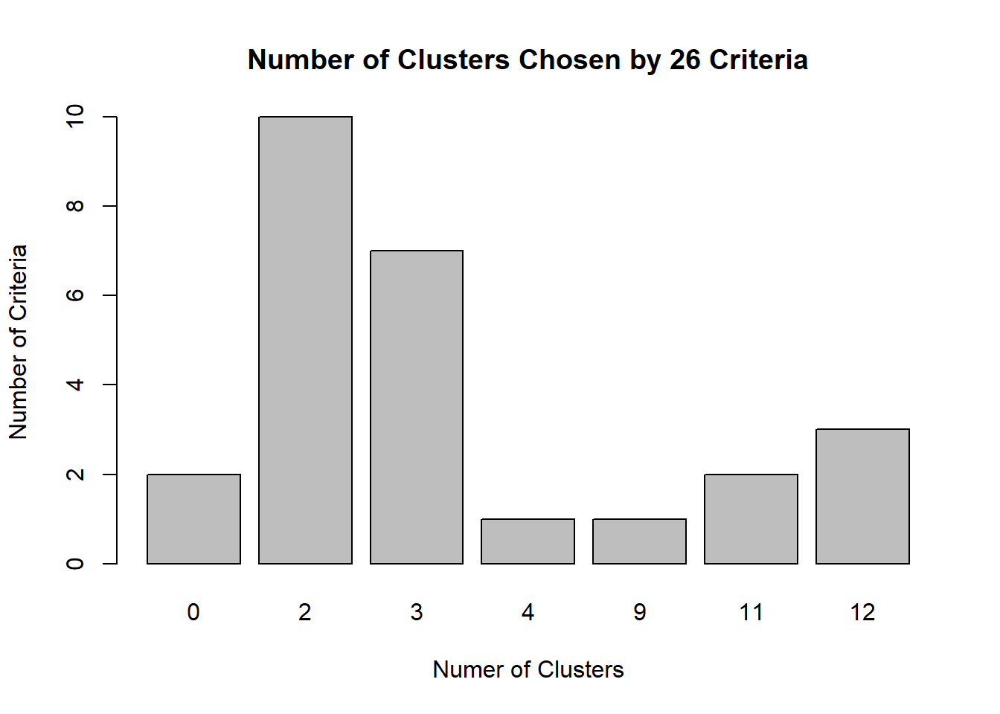

9.1 K-medias (k-means)
El algoritmo de clustering de las k-medias es uno de los algoritmos más utilizados por su simplicidad teórica y por su eficiencia computacional. No obstante, tiene algunas limitaciones que es necesario tener en cuenta.
9.1.1 El modelo
El algoritmo trata de dividir el espacio en regiones (clusters) de tal forma que toda observación pertenezca a un y solo un cluster. Es decir, cualquier observación estará contenida en uno de los clusters que se definan y no podrá pertenecer a ningún otro.
La \(k\) que aparece en el nombre de la técnica hace referencia a que el algoritmo necesita que se especifique previamente el número de clusters \(k\) que se desean obtener. La forma de proceder del algoritmo es la siguiente:
- Se definen \(k\) puntos aleatorios en el espacio conocidos como centroides y que serán los representantes de cada cluster.
- Se calcula la distancia -euclídea- de cada punto a cada uno de los \(k\) centroides y se asigna cada punto aquel cluster cuya distancia a su centroide sea mínima.
- Se recalculan los \(k\) centroides como la media de las observaciones que componen cada cluster.
- Se vuelve al paso 2.
El algoritmo termina cuando se satisface algún criterio de parada como, por ejemplo, que ningún punto cambie de cluster de una iteración a la siguiente.
El problema que estamos tratando de resolver mediante el algoritmo se puede ver como un problema de optimización. Matemáticamente, dado un conjunto de \(n\) observaciones, \(x_1, \ldots, x_n\) queremos buscar aquellos clusters \(S^* = {S_{1}, S_{2}, ., S_{k}}\) con \(k \leq n\) que minimicen la expresión
\[ S^* = \underset{S}{argmin} \sum_{i=1}^{k}\sum_{x_{j}\in S_{j}} d(x_{j}, c_{i}), \] donde \(c_i\) es el centroide de \(S_i\).
Se suele usar la distancia euclidea, pero podemos buscar otras distancias que se adecuen mejor a los datos, como por ejemplo, la norma infinita o la distancia de Manhattan.
9.1.2 Un ejemplo gráfico
Para comprender mejor el comportamiento del algoritmo, veamos su funcionamiento en un ejemplo de juguete:
 


Los grupos están claramente diferenciados; es un ejemplo de clustering de libro.
El primer paso es inicializar los \(k\) centroides aleatoriamente y asignar cada punto a su centroide más cercano.

A continuación se recalculan los centroides como el punto medio de loas observaciones asignadas a un mismo cluster, es decir,
\[ c^{(n)}_i = \frac{1}{|g_i|} \sum_{x_j \in g_i} x_j \]
## Warning: funs() is soft deprecated as of dplyr 0.8.0
## please use list() instead
##
## # Before:
## funs(name = f(.))
##
## # After:
## list(name = ~ f(.))
## This warning is displayed once per session.
E iteramos hasta que se satisfaga la condición de parada. Llegaremos a una solución de este estilo

Cada uno de los centroides puede tomarse como un representante de cada grupo y será útil en la caracterización de la agrupación propuesta.
9.1.3 Limitaciones del algoritmo
El ejemplo anterior es propicio para las k-medias ya que la estructura de grupos es muy simple. Sin embargo, el algoritmo se comporta peor con estructuras más complejas. Por ejemplo,

En función de la \(k\) elegida, el resultado puede ser muy distinto.

Pero a un k-medias no podemos exigirle que ajuste bien este tipo de estructuras de datos. Pensemos un momento en qué es lo que intenta hacer. Más allá del algoritmo iterativo que se implementa para resolver el problema, en el fondo no es más que, dados unos centros, asignar las observaciones a aquél centro que esté más cerca. Esta partición del espacio también se conoce como teselación de Voronoi.

9.1.4 Ventajas y desventajas
Las ventajas de la técnica de las k-medias son:
- Rapidez computacional.
- La existencia de un centroide ayuda a describir la solución.
- Todo punto pertenece a un cluster.
- Hay que explicitar el número de grupos a buscar.
Las desventajas:
- Depende mucho la semilla inicial (difícil de replicar)
- Sensible a outliers.
- Separación lineal entre clusters.
- No existe el concepto de pertenencia a un cluster.
- Todo punto pertence a un cluster.
- Hay que explicitar el número de grupos a buscar.
Los dos últimos puntos de las ventajas y desventajas son idénticos ya que se pueden ver desde los dos puntos de vista. Que todo punto pertenezca a un cluster nos asegura que vamos a ser capaces de asignarle un grupo a todos los clientes de nuestra cartera, por ejemplo. Sin embargo, pueden existir clientes cuyo comportamiento sea muy diferente al resto y podría ser que no tuviese sentido asignarlos a ningún cluster, cosa que el algoritmo de las K-medias no es capaz de hacer.
La necesidad de explicitar el número de grupos que se quieran buscar (la \(k\) del nombre del algoritmo) hace que, si se tiene claro el número de grupos que se quieren obtener, sea una ventaja, pero que si no se tiene claro, hay que actuar por ensayo-error lanzando el algoritmo variando la \(k\) para obtener la mejor agrupación.
9.1.5 Implementación en R
Para esta sección usaremos el data set de iris, donde tenemos datos sobre las dimensiones de pétalos y sépalos de distintas especies de flores.
data(iris)
head(iris)## Sepal.Length Sepal.Width Petal.Length Petal.Width Species
## 1 5.1 3.5 1.4 0.2 setosa
## 2 4.9 3.0 1.4 0.2 setosa
## 3 4.7 3.2 1.3 0.2 setosa
## 4 4.6 3.1 1.5 0.2 setosa
## 5 5.0 3.6 1.4 0.2 setosa
## 6 5.4 3.9 1.7 0.4 setosaNos centraremos en las dimensiones de los pétalos.
library(ggplot2)
p = ggplot(iris, aes(Petal.Length, Petal.Width, color = Species)) + geom_point()
p
Ahora aplicamos K-means con \(k=3\) y \(nstart=20\). Esto significa que agrupará los datos en tres grupos y el algoritmo probará 20 distintas formas de empezar y se quedará con la mejor, es decir, seleccionará aquella con menor variación de los clústers.
set.seed(20)
irisCluster = kmeans(iris[, 3:4], 3, nstart = 20)
irisCluster## K-means clustering with 3 clusters of sizes 50, 52, 48
##
## Cluster means:
## Petal.Length Petal.Width
## 1 1.462000 0.246000
## 2 4.269231 1.342308
## 3 5.595833 2.037500
##
## Clustering vector:
## [1] 1 1 1 1 1 1 1 1 1 1 1 1 1 1 1 1 1 1 1 1 1 1 1 1 1 1 1 1 1 1 1 1 1 1 1
## [36] 1 1 1 1 1 1 1 1 1 1 1 1 1 1 1 2 2 2 2 2 2 2 2 2 2 2 2 2 2 2 2 2 2 2 2
## [71] 2 2 2 2 2 2 2 3 2 2 2 2 2 3 2 2 2 2 2 2 2 2 2 2 2 2 2 2 2 2 3 3 3 3 3
## [106] 3 2 3 3 3 3 3 3 3 3 3 3 3 3 2 3 3 3 3 3 3 2 3 3 3 3 3 3 3 3 3 3 3 2 3
## [141] 3 3 3 3 3 3 3 3 3 3
##
## Within cluster sum of squares by cluster:
## [1] 2.02200 13.05769 16.29167
## (between_SS / total_SS = 94.3 %)
##
## Available components:
##
## [1] "cluster" "centers" "totss" "withinss"
## [5] "tot.withinss" "betweenss" "size" "iter"
## [9] "ifault"A continuación, hacemos una comprobación de si el algoritmo funciona correctamente.
table(irisCluster$cluster, iris$Species)##
## setosa versicolor virginica
## 1 50 0 0
## 2 0 48 4
## 3 0 2 46Normalmente, esta comprobación no la podemos hacer, ya que al tratarse de aprendizaje no supervisado no tenemos las clases.
p = ggplot() + geom_point(data = iris, aes(x = Petal.Length, y = Petal.Width, shape = iris$Species, color = as.factor(irisCluster$cluster))) + geom_point(data = as.data.frame(irisCluster$centers), aes(x = Petal.Length, y = Petal.Width), size = 3)
p
9.1.6 Evaluación
Como hemos visto se puede hacer una evaluación visual del funcionamiento del algoritmo. En el caso anterior se puede plotear bien, ya que sólo usamos dos componentes. En caso de tener más componentes podemos usar un PCA y usar las dos componentes principales.
library(cluster)
x = rbind(cbind(rnorm(10,0,0.5), rnorm(10,0,0.5)), cbind(rnorm(15,5,0.5), rnorm(15,5,0.5)))
clusplot(clara(x, 2))
x4 = cbind(x, rnorm(25), rnorm(25))
clusplot(pam(x4, 2))
Hay que tener cuidado con estas visualizaciones, ya que reducir grandes dimensiones a dos componentes se pierde mucha información. Aunque visualmente parezca que no agrupa bien es posible que sí lo haga en una tercera componente.
Otro método más numérico es usar el coeficiente de Silhouette. El coeficiente de Silhouette contrasta la distancia media con los elementos en el mismo grupo con la distancia media a los elementos en otros grupos. Los objetos con un valor alto se consideran agrupados.
library(cluster)
irisCluster = clara(iris[, 3:4], k = 3, metric = "euclidean")
si = silhouette(irisCluster)
cat(paste("Cluster 1:", mean(si[, 3][si[, 1]==1]),
"\nCluster 2:", mean(si[, 3][si[, 1]==2]),
"\nCluster 3:", mean(si[, 3][si[, 1]==3])))## Cluster 1: 0.932477754552061
## Cluster 2: 0.647244785444017
## Cluster 3: 0.549691563362595Nota: clara es una variante de K-means que se suele usar cuando tienes una gran cantidad de datos. Véase también pam.
9.1.7 Determinar el número de clústers óptimo
Hay varios criterios para determinar el número óptimo de clústers, como por ejemplo, el coeficiente de Silhouette entre otros.
El siguiente método usa 26 criterios distintos para determinar el número óptimo de clústers.
library(NbClust)
set.seed(4)
nc = NbClust(iris[, 3:4], min.nc=2, max.nc=15, method="kmeans")
## *** : The Hubert index is a graphical method of determining the number of clusters.
## In the plot of Hubert index, we seek a significant knee that corresponds to a
## significant increase of the value of the measure i.e the significant peak in Hubert
## index second differences plot.
## 
## *** : The D index is a graphical method of determining the number of clusters.
## In the plot of D index, we seek a significant knee (the significant peak in Dindex
## second differences plot) that corresponds to a significant increase of the value of
## the measure.
##
## *******************************************************************
## * Among all indices:
## * 10 proposed 2 as the best number of clusters
## * 7 proposed 3 as the best number of clusters
## * 1 proposed 4 as the best number of clusters
## * 1 proposed 9 as the best number of clusters
## * 2 proposed 11 as the best number of clusters
## * 3 proposed 12 as the best number of clusters
##
## ***** Conclusion *****
##
## * According to the majority rule, the best number of clusters is 2
##
##
## *******************************************************************barplot(table(nc$Best.n[1,]),
xlab="Numer of Clusters", ylab="Number of Criteria",
main="Number of Clusters Chosen by 26 Criteria")
Como podemos observar el número optimo de clúster es dos, aunque hay siete criterios que dicen que el número óptimo es tres. Esta conclusión tiene sentido observando los datos.